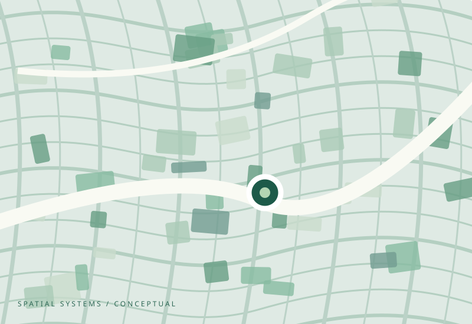

View project
View project Gentrification and Neighborhood Change in Buffalo
A tract-level study of socioeconomic change (2016–2024), using a continuous intensity index, regression, and original GIS maps.
Explore researchI'm Sazzad Hossain, a master's student in Geographical Information Science at the University at Buffalo. My work explores how settlement, economic opportunity, and social inequality shape places and communities.
University at Buffalo · MS expected May 2027

Spatial patterns tell us where change happens. I want to better understand why—the household decisions, economic conditions, and institutions that help produce those patterns.
View project A tract-level study of socioeconomic change (2016–2024), using a continuous intensity index, regression, and original GIS maps.
Explore research View project
View project A gravity-based model of regional accessibility across 58 upazilas, using road connectivity, population, nighttime lights, and travel-time scenarios.
Explore research View project
View project Sentinel-2 classification of 58 upazilas, vegetation-to-impervious conversion mapping, and comparisons with nighttime lights and accessibility.
Explore researchMy academic interests span urban and economic geography, immigrant settlement, housing markets, and the social mechanisms behind spatial inequality.
More about meNeighborhood change, immigrant settlement, housing markets, and opportunity.
GIS, statistical analysis, remote sensing, mapping, and spatial modeling.
Machine learning applications; developing interests in computational social science and agent-based modeling.
 View project
View project An ongoing spatial examination of PM2.5 exposure in relation to income and racial composition.
Explore research View project
View project Applied machine learning research using environmental and topographic predictors.
Explore research